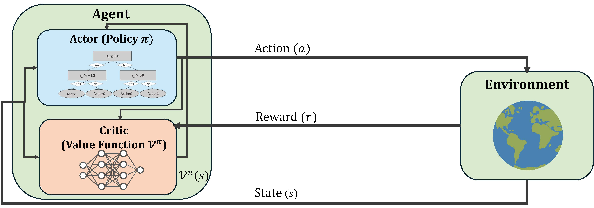
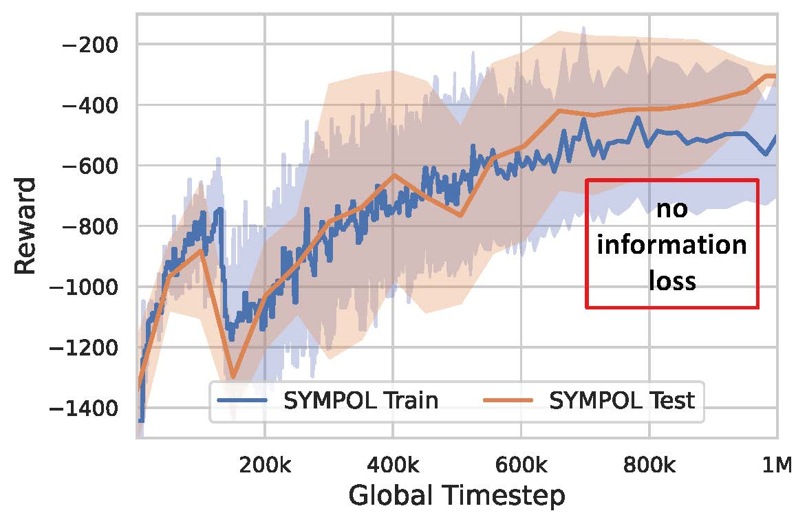
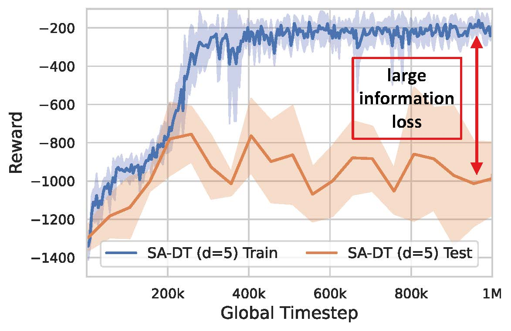
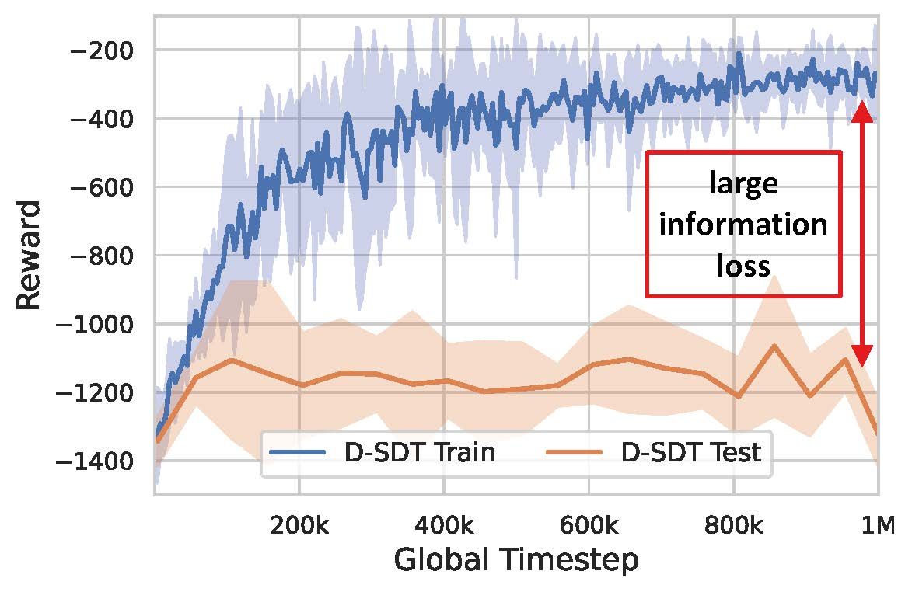
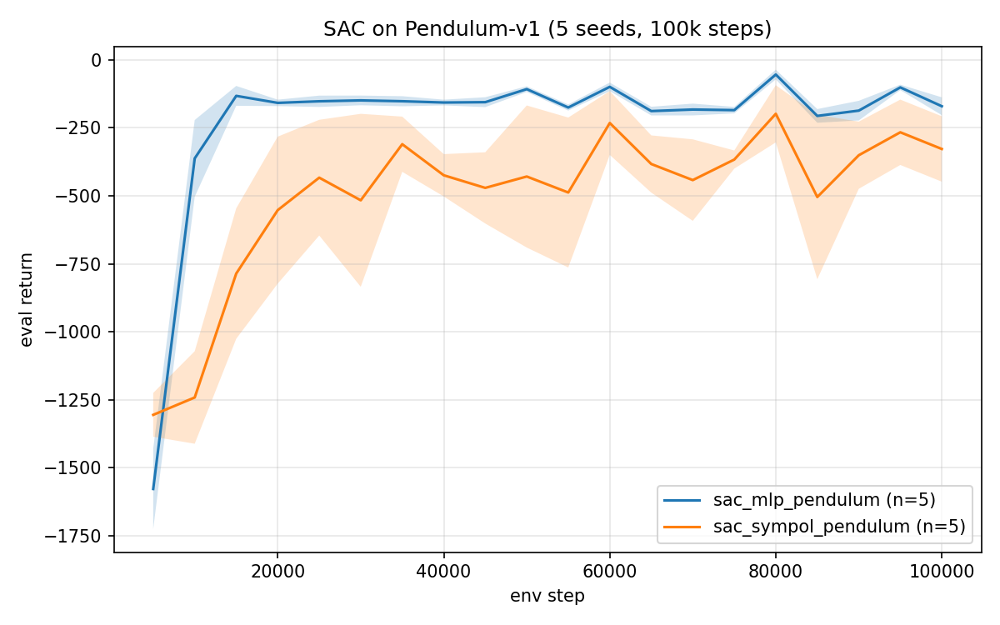
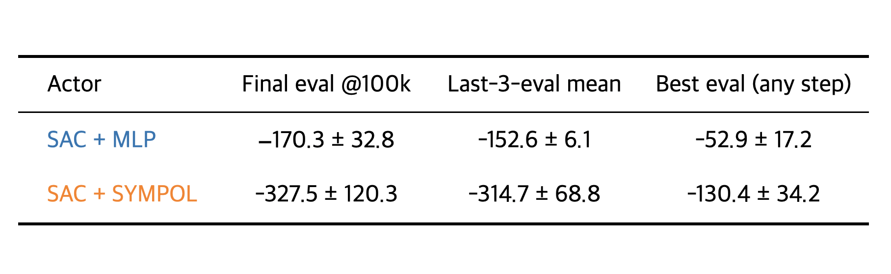
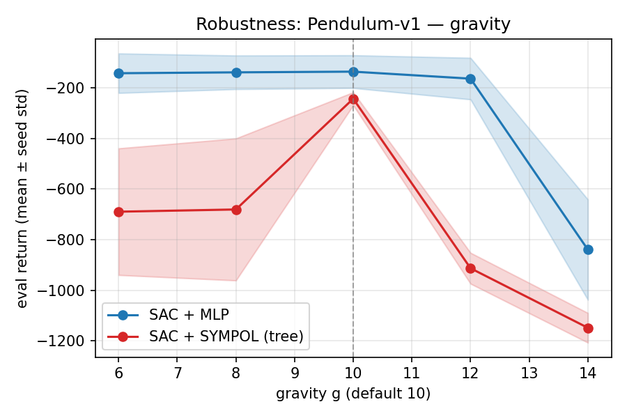
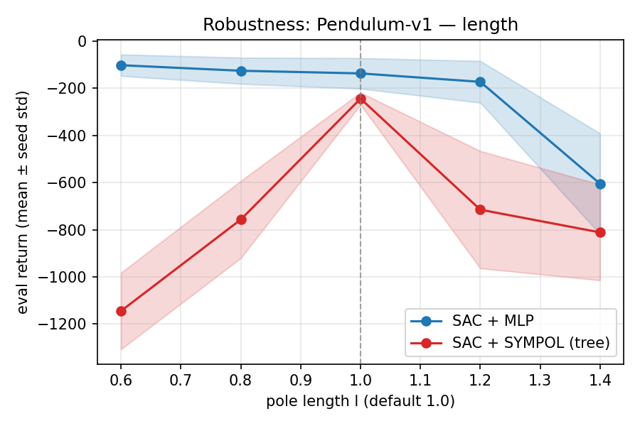
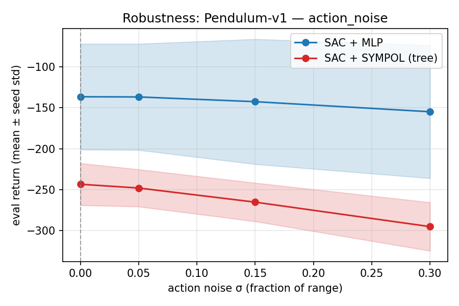
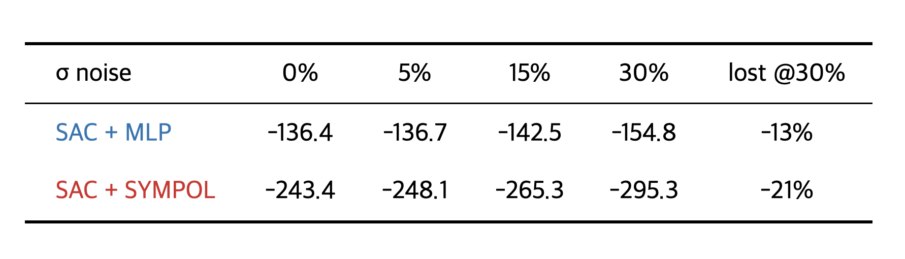

🌳 SYMPOL-RL: Interpretable Tree-Based Reinforcement Learning
Reproducing SYMPOL across 11 environments, then extending it two ways: an off-policy SAC integration and a zero-shot robustness study.
What is SYMPOL?
SYMPOL (Symbolic Tree-Based On-Policy RL) learns an interpretable decision tree directly with policy gradients, instead of distilling a tree from a trained neural network. The tree is the policy, so there is no information loss between training and deployment — every action can be traced to a single root-to-leaf path of human-readable feature comparisons.

SYMPOL overview: an interpretable decision-tree actor paired with a neural-network critic, dropped into a standard actor-critic RL framework.The problem we illustrate: information loss

(a) SYMPOL (ours): Train and test return overlap — no loss at inference.

(b) State-Action DT: Large gap — the distilled tree loses the teacher's reward.

(c) Discretized Soft DT: Hardening the soft tree at inference drops reward.
What we did (Our contribution)
Extension 1
SAC integration (off-policy)
The original SYMPOL is on-policy (PPO). We showed its straight-through tree routing also produces a usable gradient for SAC, an off-policy method — in a single new ~320-line file, with no changes to the tree itself. The tree policy does learn under SAC; it converges slower and with higher variance than an MLP, but reaches a comparable ceiling. Interpretability costs a constant factor in sample efficiency, not a qualitative failure.
Extension 2
Robustness under perturbation (zero-shot)
We took the SAC-trained policies and evaluated them zero-shot on perturbed physics (gravity, pole length) and actuator noise, with no fine-tuning. Both policies tolerate actuator noise well; the MLP is more robust to physics shift, while the tree shows a sharp performance peak at its training physics.
Key results
1. SAC integration on Pendulum-v1 (5 seeds × 100k steps)


Takeaway: the tree policy learns (every seed climbs from ≈ −1350 random return to a best eval of −79…−170). The gap to MLP is convergence speed and stability, not capability.
2. Robustness (zero-shot, mean return over 20 episodes)




Both degrade gently — the cleanest positive robustness result. The tree peaks sharply at its training physics and degrades faster under gravity/length shift (full curves in the figures above).
Poster
Open in New TabBibTeX (Original Paper)
@article{marton2024sympol,
title={SYMPOL: Symbolic Tree-Based On-Policy Reinforcement Learning},
author={Marton, Sascha and Grams, Tim and Vogt, Florian and L\"udtke, Stefan
and Bartelt, Christian and Stuckenschmidt, Heiner},
journal={arXiv preprint arXiv:2408.08761},
year={2024}
}